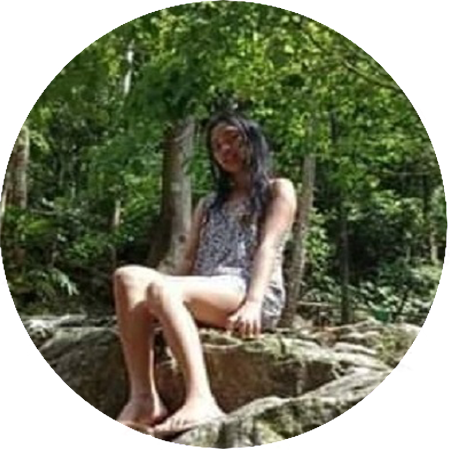

Angel Angelica Marie Opis is a 20 year old lady from the School of Business and Management.Angel has been to Mahinhin, Boac, Marinduque, which she claims to be a haven for jaw-breaking natural attractions. Filled with views of mountain ranges at the distance combined with the clear sky on a sunny day, Mahinhin is a place that deserves to be in every naturalist's bucket list.
Krista Krista Mendiola is a future social worker and adventurer. The 20 year-old from the School of Arts and Sciences has channeled her inner naturalist beneath the calm waters of Paadjao falls in Mogppog, Marinduque. Paadjao is a hidden gem deep inside the trees of Barangay Bokbok, and is worthy only for those who are willing to exert the effort into finding it.
Rachel Hailing from the colorful town of Gasan, Rachel Magtibay is nothing but an outgoing person. She has an eye for nature no matter where she is. She recently went to Shangri-La Hotel in Manila, and even though it was in a concrete jungle, Rachel pointed out how it felt like an experience in the province in a way. This goes to show that the city ain't always about neon lights and living in the fast lane.
Kristel Kristel Jane Quindoza a woman from the peaceful Barangay of Kilo-Kilo, Sta.Cruz. Also a student of the Department of Engineering at MSC, that has an adventurous heart who loves to explore the vast forests and dreams to exlore more throughout the country. She expresses herself by taking picture even at their backyard. Truly, she is one of the joyful adventurist that fully engage herself to face terrains and obstacle of the woodland.
Krizalyn Introducing Krizalyn F. Rodelas from the cheerful Barangay of Ipil, Sta.Cruz. Her display profile background was taken at Barangay Bathala Beach, Sta.Cruz. She loves the scent of the see and feels calm when the see breeze touches her skin. Her heart full of excite when she sees the wide beaches in Marinduque.